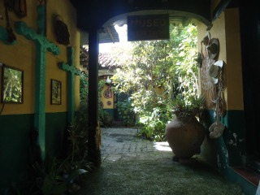
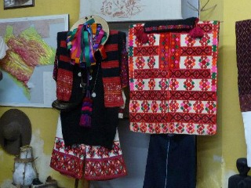
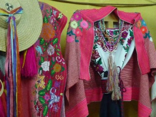
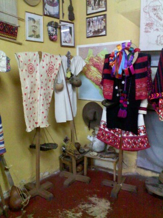
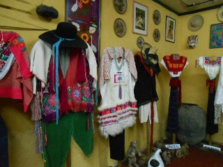

El museo exhibe más de 90 trajes de vestir que representan a las diferentes poblaciones indígenas de Chiapas. Joyería, instrumentos musicales, accesorios de vestuario, de objetos religiosos, sombreros, máscaras, estatuillas y pieles de animales complementan la exhibición. Su propietario, el señor Sergio Castro Martínez, personalmente dirige las visitas guiadas y explica a los visitantes los lugares, la vestimenta, las ceremonias y la vida cotidiana de los pueblos habitantes del estado de Chiapas.
Se encuentra ubicado en la Calle Guadalupe Victoria y Avenida Matamoros. Cerca de la Iglesia de La Merced.
Si usted se encuentra ubicado en la plaza de la paz viendo de frente hacia la catedral puede caminar hacia atrás como referencia encontrará frente a la plaza el asilo de ancianos San Juan de Dios camine sobre esa acera hasta llegar a la esquina pasando por Bancomer, al llegar a la esquina de vuelta a la derecha y camine dos cuadras y media sobre la Calle Guadalupe Victoria para llegar al museo.
En el lugar usted puede realizar actividades como:
* Fotografía
* Visita a lugares históricos
* Visita a Museos





posicione el mouse sobre las imágenes